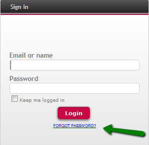
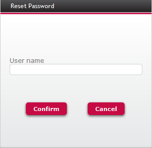
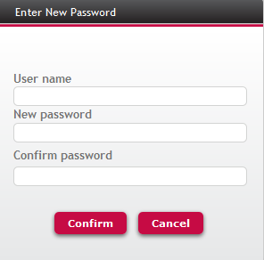

See how to provide the user with a way to recover his password when using GAM integrated security.
We can take as an example the "GAMExampleLogin" web Object, which has a link ("Forgot your password?") which enables the user to recover his password.

Figure 1.
The way suggested in this document is to send an e-mail to the user, with a link to a web page where he will be able to enter and confirm a new password. Everything is solved using the GAM API.
Two objects are distributed with the GAM examples Library: GAMExampleRecoverPasswordStep1 and GAMExampleRecoverPasswordStep2, in order to solve this functionality. The idea is that the GeneXus user completes these samples according to his needs. 1. Look at the GAMExampleLogin events, the event associated to "ForgotPassword" link is the following:
Event 'ForgotPassword'
GAMExampleRecoverPasswordStep1.Link()
EndEvent
So the GeneXus user has to edit GAMExampleRecoverPasswordStep1 object, uncomment the code there, and add the code which sends an email to the user, after having generated a key which identifies the user. See the following step: 2. Edit GAMExampleRecoverPasswordStep1 events:
Event Enter
&User = GAMRepository.GetUserByLogin(&UserAuthTypeName, &UserName, &Errors)
If &Errors.Count = 0
&KeyToChangePassword = &User.RecoverPasswordByKey(&Errors) --> This code generates the KEY to recover password (*)
If &Errors.Count = 0
// Send mail to User with instructions, for example:
&Mail.To.Clear() --> &Mail is MailMessage Data Type
&Mail.To.New(Format("%1 %2",&User.FirstName, &User.LastName), &User.EMail)
&Mail.Subject = 'Password change with GAM'
&Mail.HTMLText = Format('To change the password in GAM click <a href="%1">here</a>.',
&Host + &BaseUrl + GAMExampleRecoverPasswordStep2.Link(,&KeyToChangePassword)) (**)
&SMTP.Host = &host --> &SMTP is &SMTPSession Data Type
&SMTP.Sender = &Sender
&isOK = &SMTP.Login()
If &SMTP.ErrCode = 0
&SMTP.Send(&Mail)
If &SMTP.ErrCode <> 0
&Message = Format('Failed to send mail: %1 (%2)', &Smtp.ErrDescription, &Smtp.ErrCode)
Endif
&SMTP.Logout()
Else
&Message = Format("Failed to start mail session: %1 (%1)", &SMTP.ErrDescription, &ret)
Endif
If &Message.IsEmpty()
Msg('An email has been sent with instructions to change the password.')
Else
Msg(&Message.ToString())
Endif
Else
Do 'DisplayMessages'
EndIf
Else
Do 'DisplayMessages'
EndIf
EndEvent
(*) In the form of GAMExampleRecoverPasswordStep1 object the user is asked to enter his username or user email (see Figure 2). With the information given, a KEY is generated to identify this user. By this KEY the user will be able to change his password; so the KEY has to be passed to the webpanel which enables the user to change the password. One way to preserve the user confidentiality is to send by email (to the user email) a link to the web panel which enables to change the password.
(**) We have to add the value of the property Application ID of the Version properties when calling GAMExampleRecoverPasswordStep2. For example: GAMExampleRecoverPasswordStep2.Link("15c110fd-e271-4ec4-a911-4cbfe89b627c",&KeyToChangePassword)

3. The user will receive an email with a link to "gamexamplerecoverpasswordstep2" object which receives the KEY as parameter, which has been generated by "&User.RecoverPasswordByKey(&Errors)" code shown above. Figure 3 shows an image of GAMExampleRecoverPasswordStep2 object, which has the form and logic to enter a new password twice and confirm the password change.

The code to change the user password is the following:
&ChangePwdOK = &User.ChangePasswordByKey(&KeyToChangePassword, &UserPasswordNew, &Errors)
After the user confirms the new password, he logs in automatically. Change this code in order to redirect to the desired object depending on the sucess of the process.
User Recovery Password Key Timeout
|